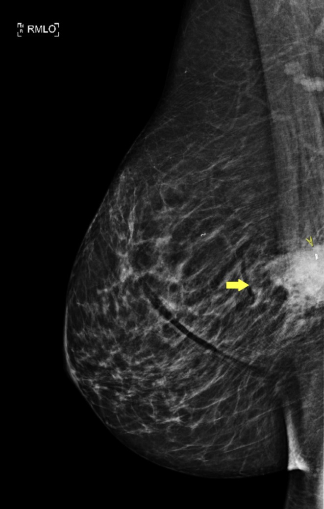
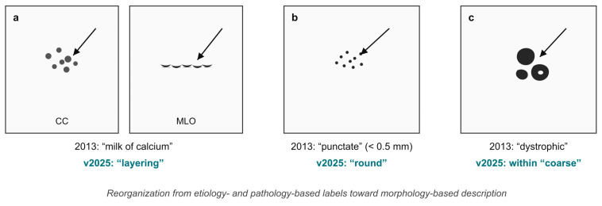
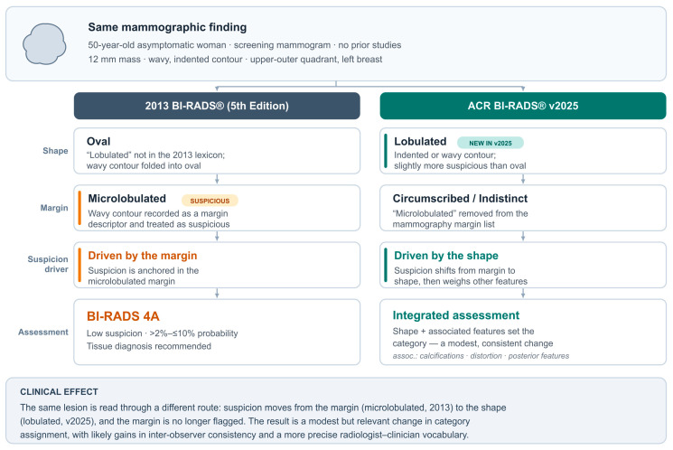
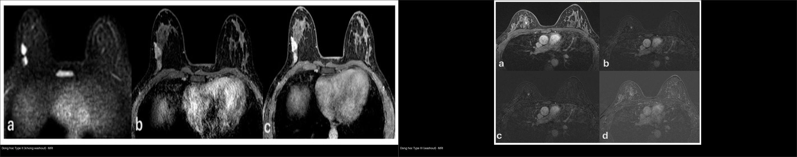
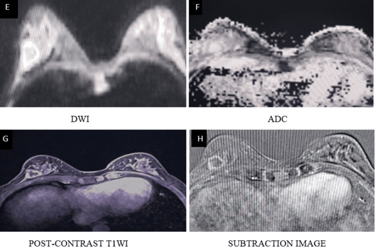
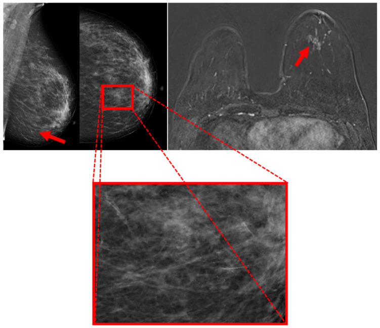

510 — Vú & BI-RADS: nhũ ảnh, siêu âm & MRI / Breast BI-RADS
Tags: pattern:khoi-vu pattern:vi-voi-hoa vung:vu score:BI-RADS protocol:MRI-vu
Mức chắc chắn (certainty): tổng hợp y văn (literature synthesis) — nhóm tự biên từ y văn mở (Europe PMC/PMC: Diagnostics 2026, Tomography 2026, Medical Sciences 2025, Cureus 2026, Clin Case Rep 2026) + các ca minh họa có giấy phép CC BY.
1. Tổng quan — hình dạng + bờ + vôi + động học quyết định % ác
- TẠI SAO tín hiệu/đậm độ nói lên bản chất: tân mạch ung thư rò rỉ + shunt động–tĩnh mạch → ngấm thuốc nhanh (đỉnh 1–2 phút) rồi thoát sớm = Type III washout (giảm > 10% sau đỉnh) / Type II plateau (ổn định), còn mô xơ/nang lành ngấm chậm–tăng dần = Type I persistent. Vì tế bào ác đặc, màng tế bào dày → DWI sáng, ADC thấp (giới hạn khuếch tán); mô mỡ/xơ/hoại tử có ADC cao.
- Ngưỡng ACR BI-RADS (v2025, nguy cơ ác kèm theo): 1–2 (0%), 3 (> 0–≤ 2%, theo dõi 6–12–24 tháng, KHÔNG sinh thiết), 4A (> 2–10%) / 4B (> 10–50%) / 4C (> 50–< 95%, sinh thiết lõi), 5 (≥ 95%, sinh thiết + chuẩn bị điều trị), 6 (đã biết K, đánh giá đáp ứng).
- Cập nhật v2025 (Kaplan & Aydemir 2026) — đọc đúng từ vựng: bỏ "microlobulated", thêm hình dạng "lobulated"; "punctate" gộp vào "round"; "dystrophic" xếp trong "coarse"; "milk of calcium" đổi thành "layering" (đặc trưng nằm lớp khi chụp nghiêng). Điểm mấu chốt: ánh xạ từ mô học/nguyên nhân sang MÔ TẢ HÌNH THÁI; với khối "lobulated", độ nghi ngờ được tổng hợp từ hình dạng + đặc trưng kèm theo (vôi hóa, biến dạng cấu trúc, đặc trưng sau khối) chứ không chỉ từ bờ.
- Vôi lành: bỏng ngô (popcorn) > 2–3 mm (fibroadenoma thoái hóa), "tách trà" (teacup) trên phim nghiêng, sữa canxi (layering, nằm lớp ở tư thế đứng), vôi hóa mạch máu hình ống. Vôi ác: đa hình (pleomorphic) mịn + phân nhánh theo ống tuyến (branching), phân bố theo ống/tuyến.
2. Gamut khối/vôi vú (Gamut)
- Bầu dục ngang + bờ đều + song song da (orientation parallel): BI-RADS 3 — theo dõi (fibroadenoma/nang).
- Trục đứng (không song song) + gai (spiculated) + bóng lưng (posterior shadowing) + vôi phân nhánh + Type III: BI-RADS 5 — sinh thiết + điều trị ung bướu.
- Bất đối xứng khu trú + co kéo: BI-RADS 4 — sinh thiết (kể cả desmoid/fibromatosis giả K!).
- Bỏng ngô/teacup/layering/sữa canxi: BI-RADS 2 — bỏ qua.
- Vôi hóa nhóm nhỏ (clustered) đơn độc: vùng xám — phân độ theo đa hình + phân bố (đường ống/tuyến) → BI-RADS 4.
3. Bảng so sánh phân biệt (ma trận đối chiếu)
| Thực thể (entity) | Hình ảnh điển hình | Chốt vào (rule-in) | Chốt loại (rule-out) | Gợi ý xác nhận |
|---|---|---|---|---|
| BI-RADS 3 | Bầu dục ngang + bờ đều + đồng nhất | ≤ 2% + ổn định 2 năm → xuống 2 | Trục đứng/gai → 4–5 | Theo dõi 6–12–24 tháng |
| BI-RADS 4 | Bất đối xứng + bờ che lấp + vôi nhóm | 4A/4B/4C + sinh thiết lõi | Bỏng ngô/teacup → 2 | Core biopsy + kẹp đánh dấu |
| BI-RADS 5 | Trục đứng + gai + vôi phân nhánh + Type III | ≥ 95% + chuẩn bị mổ/hóa | Bầu dục đều → 3 | Sinh thiết + MRI lan rộng |
| Giả K (desmoid) | Gai + xâm lấn cơ + β-catenin (+) | β-catenin + CK (−) | CK (+) → metaplastic | Mô bệnh + theo dõi (tái phát!) |

Nốt 13 mm sát cơ ngực, bờ không đều → BI-RADS 4, sinh thiết lõi; mô bệnh hóa ra desmoid/fibromatosis (lành nhưng xâm lấn + tái phát). Nguồn: Fiore et al., Clin Case Rep 2026 Fig. 1, CC BY 4.0.
*Ba kiểu vôi hóa phân biệt lành/ác: (a) sữa canxi "layering" (nằm lớp ở phim nghiêng — lành, BI-RADS 2); (b) "punctate" gộp vào "round"; (c) "dystrophic" xếp trong "coarse". Nguồn: Kaplan E & Aydemir AB, Diagnostics 2026 Fig. 1, CC BY 4.0.*
Cùng một khối 12 mm bờ lượn sóng: theo 2013 xếp BI-RADS 4A (do "microlobulated" là bờ nghi ngờ); theo v2025, hình dạng gọi là "lobulated" và độ nghi ngờ tổng hợp từ hình dạng + đặc trưng kèm theo. Đây là lý do phải dùng đúng từ vựng phiên bản. Nguồn: Kaplan E & Aydemir AB, Diagnostics 2026 Fig. 2, CC BY 4.0.Động học ngấm (kinetics) — "chốt" bằng đường cong

Trái: Type II plateau (ngấm rồi giữ, không thoát) — ca này hóa ra DCIS độ thấp. Phải: Type III washout (ngấm nhanh rồi thoát) — ca này là DCIS độ cao. Cạm bẫy: động học KHÔNG đồng nghĩa mô học — Type II vẫn có thể là ác. Nguồn: Urraro F et al., Medical Sciences 2025 Fig. 2 & 4, CC BY 4.0 (ảnh ghép letterbox).- Type I (tăng dần): lành (xơ, nang, fibroadenoma). Type II (plateau): nghi ngờ. Type III (washout, giảm > 10%): nghi ác mạnh.
- DWI/ADC: mô ác đặc → DWI sáng + ADC thấp; đọc kèm T2/T1FS và DCE, không thay thế động học.

Bộ ảnh MRI đa tham số (T1WI, T2WI, DWI, ADC) — DWI/ADC giúp tách mô đặc giới hạn khuếch tán (nghi ác) khỏi nang/mỡ. Nguồn: B K et al., Cureus 2026 Fig. 4, CC BY 4.0.4. Protocol vú + BI-RADS v2025
- Nhũ ảnh 2D/3D (DBT) là chuẩn nền; thêm siêu âm có mục tiêu khi vú đặc / tổn thương chỉ thấy trên 1 bình diện; MRI DCE khi BI-RADS 0/4/5, vú đặc, nguy cơ cao hoặc đánh giá lan rộng (xem
514). Sinh thiết lõi (core) dưới siêu âm/stereotactic + kẹp đánh dấu (clip). - Đọc khối theo v2025: hình dạng (oval / round / lobulated / irregular) → bờ (circumscribed / indistinct / spiculated) → đậm độ → đặc trưng kèm theo (vôi hóa, biến dạng cấu trúc, đặc trưng sau khối, mạch máu liên quan) → tổng hợp xếp BI-RADS, không chỉ dựa bờ.
- Vôi hóa: mô tả theo hình thái (round/punctate, coarse, fine pleomorphic, fine linear/branching) + phân bố (diffuse, grouped/clustered, linear, segmental); dùng "layering" thay "milk of calcium".
- Động học MRI: vẽ đường cong % tăng tín hiệu theo thời gian cho từng ROI; Type III = nghi ác; Type II = theo dõi/sinh thiết tùy bối cảnh; Type I = lành.
- Định lượng minh họa (Urraro 2025, 75 ca DCIS): Type II gặp ở DCIS độ thấp, Type III ở DCIS độ cao; MRI ước lượng kích thước tương quan vừa với mô bệnh (Pearson r = 0,62, p < 0,001) và nghiêng đo quá (overestimate); dùng OC không phải yếu tố dự báo washout (p không ý nghĩa).
flowchart TD
A[Khối/vôi vú] --> B{BI-RADS?}
B -->|1-2| C[Bỏ qua: bỏng ngô/teacup/layering]
B -->|3| D[Theo dõi 6-12-24 tháng; ổn định 2 năm -> xuống 2]
B -->|4| E[Sinh thiết lõi + clip]
B -->|5| F[Sinh thiết + ung bướu + MRI lan rộng]
E --> G{MRI: DWI/ADC + động học}
G -->|Type III washout / ADC thấp| H[Nghi ác - hội chẩn]
G -->|Type I tăng dần| I[Nghi lành - đối chiếu mô bệnh]
5. Biến thể bình thường và cạm bẫy
- Desmoid/fibromatosis gai giả K (ca dưới!) — β-catenin (+) + CK (−) mới phân biệt metaplastic carcinoma; tổn thương lành nhưng xâm lấn cơ và hay tái phát → theo dõi.
- BI-RADS 3 sinh thiết oan — nguy cơ ác ≤ 2% là theo dõi, trừ khi lo âu/nhiều yếu tố nguy cơ có bàn bạc.
- Vú đặc (ACR C/D) che tổn thương — âm tính trên nhũ ảnh không loại trừ; bổ sung siêu âm + MRI khi đặc + nguy cơ cao.
- Cạm bẫy từ vựng v2025: dùng lẫn nhãn "microlobulated"/"punctate"/"milk of calcium" (đã bỏ/gộp) làm sai độ nghi ngờ; ghi rõ phiên bản khi mô tả.
- Cạm bẫy động học: Type II vẫn có thể là ác (DCIS độ thấp) và Type III cũng gặp ở tổn thương lành → không đọc động học tách rời hình thái + DWI.
6. Tự lượng giá — Blind Quiz
Ca 1 — Nữ 42 tuổi sờ thấy u cứng ít di động. Đọc nhũ ảnh.
- Hỏi: mô tả tổn thương? BI-RADS mấy? Bước tiếp?
Bấm để hiện đáp án (findings + chẩn đoán)
- Dấu hiệu (findings): bất đối xứng nốt 13 mm sát cơ ngực, bờ không đều (mũi tên).
- Chẩn đoán (diagnosis): BI-RADS 4, sinh thiết lõi — mô bệnh desmoid/fibromatosis (β-catenin +, CK −), lành nhưng xâm lấn + tái phát (khác K).
- Nguồn: Fiore et al., Clin Case Rep 2026 Fig. 1, CC BY 4.0.
Ca 2 — Nữ 50 tuổi tầm soát, khối 12 mm bờ lượn sóng ở phần tư trên–ngoài vú trái. Đọc nhũ ảnh.
- Hỏi: khối "bờ lượn sóng" được gọi tên thế nào theo v2025? Vì sao xếp hạng có thể đổi so với 2013?
Bấm để hiện đáp án (findings + chẩn đoán)
- Dấu hiệu (findings): khối 12 mm, bờ lượn sóng, không có phim cũ.
- Chẩn đoán (diagnosis): theo 2013 → ghi "oval + microlobulated" → BI-RADS 4A; theo v2025 → hình dạng "lobulated" (hơi nghi hơn oval) + tổng hợp đặc trưng kèm theo → xếp hạng có thể đổi. Đây là lý do phải dùng đúng từ vựng phiên bản.
- Nguồn: Kaplan E & Aydemir AB, Diagnostics 2026 Fig. 2, CC BY 4.0.
Ca 3 — Đọc đường cong động học MRI.
- Hỏi: bên nào là washout? Đường cong nào nghi ác hơn? Vì sao không được chốt lành/ác chỉ bằng động học?
Bấm để hiện đáp án (findings + chẩn đoán)
- Dấu hiệu (findings): trái = Type II (plateau, không thoát), phải = Type III (ngấm nhanh rồi thoát).
- Chẩn đoán (diagnosis): Type III nghi ác hơn; nhưng ở bộ ca này cả hai đều là DCIS (trái = độ thấp, phải = độ cao) → động học không đồng nghĩa mô học; luôn đọc kèm hình thái + DWI/ADC.
- Nguồn: Urraro F et al., Medical Sciences 2025 Fig. 2 & 4, CC BY 4.0 (ảnh ghép letterbox).
Ca 4 — Nữ có nhũ ảnh vôi hóa nhóm; DCE-MRI tương ứng. Đọc ảnh.

- Hỏi: vôi hóa nhóm ở vùng mũi tên đỏ — BI-RADS mấy? DCE-MRI bổ sung được gì?
Bấm để hiện đáp án (findings + chẩn đoán)
- Dấu hiệu (findings): vùng vi vôi hóa nghi ngờ trên MLO/CC (mũi tên đỏ) + vùng tương ứng trên DCE-MRI (ô đỏ).
- Chẩn đoán (diagnosis): vôi hóa nghi ngờ → BI-RADS 4–5 (sinh thiết định vị bằng stereotactic/vôi hóa); DCE-MRI giúp định vị vùng nghi và sàng lọc hai bên trước sinh thiết. Vôi hóa đa hình mịn/phân nhánh = nghi ác.
- Nguồn: Ünal S & Açıkgözoğlu E, Tomography 2026 Fig. 1, CC BY 4.0.
Ca 5 — Vôi hóa "sữa canxi": đọc 2 tư thế CC và MLO.
- Hỏi: dấu hiệu nào khẳng định "sữa canxi" lành? Vì sao phải chụp nghiêng?
Bấm để hiện đáp án (findings + chẩn đoán)
- Dấu hiệu (findings): vôi hóa nằm lớp (layering) ở tư thế đứng (MLO), đáy ổ nang; trên CC có thể trông như đốm mờ.
- Chẩn đoán (diagnosis): sữa canxi (milk of calcium → v2025 gọi "layering") = BI-RADS 2, lành, bỏ qua — chốt nhờ tính nằm lớp theo trọng lực khi đổi tư thế.
- Nguồn: Kaplan E & Aydemir AB, Diagnostics 2026 Fig. 1, CC BY 4.0.
Bài liên quan chéo
- 500 – Tổng quan Vú & SPK
- 512 – Vi vôi hóa, biến dạng cấu trúc & túi ngực (đã có)
- 514 – Ung thư vú: giai đoạn TNM & MRI lan rộng (đã có)
- 516 – Hình ảnh vú sau điều trị: hoại tử mỡ, sẹo vs tái phát & BIA-ALCL
- 375 – U phần mềm (desmoid ngoài vú)
Ảnh
510_mammo-BIRADS4_CCR-Fiore-CCBY40.jpg,510_voi-hoa-lexicon_MAMMO_PMC13361901.jpg,510_khoi-lobulated-lexicon_MAMMO_PMC13361901.jpg,510_dong-hoc-TypeII_MRI_PMC12641647.jpg,510_dong-hoc-TypeIII_MRI_PMC12641647.jpg,510_DWI-ADC_MRI_PMC13222465.jpg,510_voi-hoa-BIRADS45_MAMMO-MRI_PMC13306530.jpg,composite_dong-hoc-TypeII-vs-TypeIII.jpg. Nguồn + giấy phép từng ảnh trongimages/CREDITS.md.
Không dùng để chẩn đoán độc lập khi chưa có người hướng dẫn.